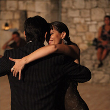

Romina Tumini es una Psicóloga-psicoterapeuta
que cree que las personas son mucho más que la suma de sus conductas o el resultado de su pasado. Su educación interdisciplinaria le ha posibilitado construir y aplicar una perspectiva holística del asesoría psicológica y la psicoterapia.
Sobre mí
Yo soy una psicóloga y asesora psicológica educada en la perspectiva centrada en la persona ( o perspectiva rogeriana) y en la Psicoterapia Experiencial Focusing. He realizado una especialización en el Tratamiento del Trauma psicológico y tengo experiencia particularmente en el área de dolores psicosomáticos.
Durante casi 20 años he sido bailarina y profesora de Tango Argentino y también me he formado como Tango-Terapeuta. En este ámbito he creado mi propia perspectiva terapéutica, llamada Innertango, que combina el Focusing con el enfoque tradicional del Tango-Terapia
Siendo yo misma una emigrante, tengo experiencia personal en temas como el “no pertenecer”, diferencias interculturales, el desarraigo y soy particularmente sensible respecto de la pérdida que se genera al emigrar. Más aún, he trabajado terapéuticamente con inmigrantes y también con refuguiados en la organización Médicos del Mundo y en el Centro Helénico de Rehabilitación de Víctimas de Tortura.
Mis Estudios
-

2008-2013
Focusing Terapia Experiencial del Trauma
Centro Helénico de Focusing, Atenas, Grecia. -

2007-2012
Perspectiva centrada en la persona y Focusing Psicoterapia Experiencial
Centro Helénico de Focusing, Atenas, Grecia.2007-2011
Perspectiva centrada en la persona y Focusing Terapia Experiencial, Asesoría psicológica
Centro Helénico de Focusing, Atenas, Grecia.2007-2011
Terapeuta en Focusing
The Focusing Institute, New York -

2009
Formación como Tango Therapeuta, especializada en el método del Dr. Trossero.
Rosario, Argentina. -

2008
Master en Psicopedagogía clínica,
con orientación en Psicoanálisis.
Universidad de Leon, España2007
Título de Psicología (Diploma of BA/BSc (Hons) Psychology)
The Open University, UK -

1995
Título de Profersorado en Enseñanza Primaria
Universidad Nacional del Comahue, Argentina